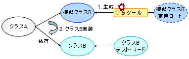
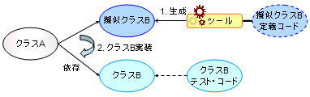

KikainekoMocker
機械猫モッカーとは
機械猫モッカー (KikainekoMocker) は、SCT (Simulated-Class by Tests) というテスト・ケースから
擬似クラスを自動生成する手法を実現するツールです。
機械猫モッカーは、JUnit のテスト・ケースを読み、そのテストを通る擬似クラスを生成します。
擬似クラスとSCT
未実装クラスや環境などに依存するクラスを開発する場合、擬似クラスを活用する手法が一般的です。
擬似クラスとは、モックやスタブ、ドライバなどの名前で知られる
「実装は正しくないが、見かけ上は正しいクラスと同じ振る舞いを見せるクラス」のことで、
主に開発・テストを容易にするために用いられます。
擬似クラスの使用は有用であるが、擬似クラス自身の作成が困難であり、労力がかかります。 対応策として擬似クラス生成用ツールが提供されていますが、 それらツールにも以下のような問題が存在します。

上の図で示すとおり、従来の擬似クラス生成ツールでは、ツールが提供する API に依存する 擬似クラス定義コードから擬似クラスを生成します。
擬似クラスに対する定義コードは、擬似クラスを生成するという目的以外に使用されないため、 擬似クラスが本物のクラスに置き換わった時点で、破棄されてしまいます。 つまり、擬似クラス作成のために余分なコストを払うことになります。
SCT とは、あるクラスに対するテストをそのクラスの入出力に対する定義であると解釈し、 その定義から擬似クラスを自動生成する手法のことです。 テスト・コードには、テスト対象のクラスが持つべき外面的な振る舞いが情報として含まれています。 SCT ではこの情報を利用して、テストから擬似クラスを生成します。
下の図で示すとおり、SCT では、テスト・コードを擬似クラスの定義と捕らえるため、 擬似クラスを定義するためのツール独自 API の学習などが不要になります。 また、テスト・コードは破棄されず、実クラスに対しても使用可能です。

機械猫モッカーは、JUnit のテスト・コードを読み込み、 そこから擬似クラスに対する定義を解釈することによって、 そのテストを通る擬似クラスを生成する、SCT を実現するツールです。
擬似クラスの使用は有用であるが、擬似クラス自身の作成が困難であり、労力がかかります。 対応策として擬似クラス生成用ツールが提供されていますが、 それらツールにも以下のような問題が存在します。
- 擬似クラスの定義方法が難解である （ツール独自 API に依存）
- 擬似クラスの定義コードは最終的に破棄される

上の図で示すとおり、従来の擬似クラス生成ツールでは、ツールが提供する API に依存する 擬似クラス定義コードから擬似クラスを生成します。
擬似クラスに対する定義コードは、擬似クラスを生成するという目的以外に使用されないため、 擬似クラスが本物のクラスに置き換わった時点で、破棄されてしまいます。 つまり、擬似クラス作成のために余分なコストを払うことになります。
SCT とは、あるクラスに対するテストをそのクラスの入出力に対する定義であると解釈し、 その定義から擬似クラスを自動生成する手法のことです。 テスト・コードには、テスト対象のクラスが持つべき外面的な振る舞いが情報として含まれています。 SCT ではこの情報を利用して、テストから擬似クラスを生成します。
下の図で示すとおり、SCT では、テスト・コードを擬似クラスの定義と捕らえるため、 擬似クラスを定義するためのツール独自 API の学習などが不要になります。 また、テスト・コードは破棄されず、実クラスに対しても使用可能です。
機械猫モッカーは、JUnit のテスト・コードを読み込み、 そこから擬似クラスに対する定義を解釈することによって、 そのテストを通る擬似クラスを生成する、SCT を実現するツールです。